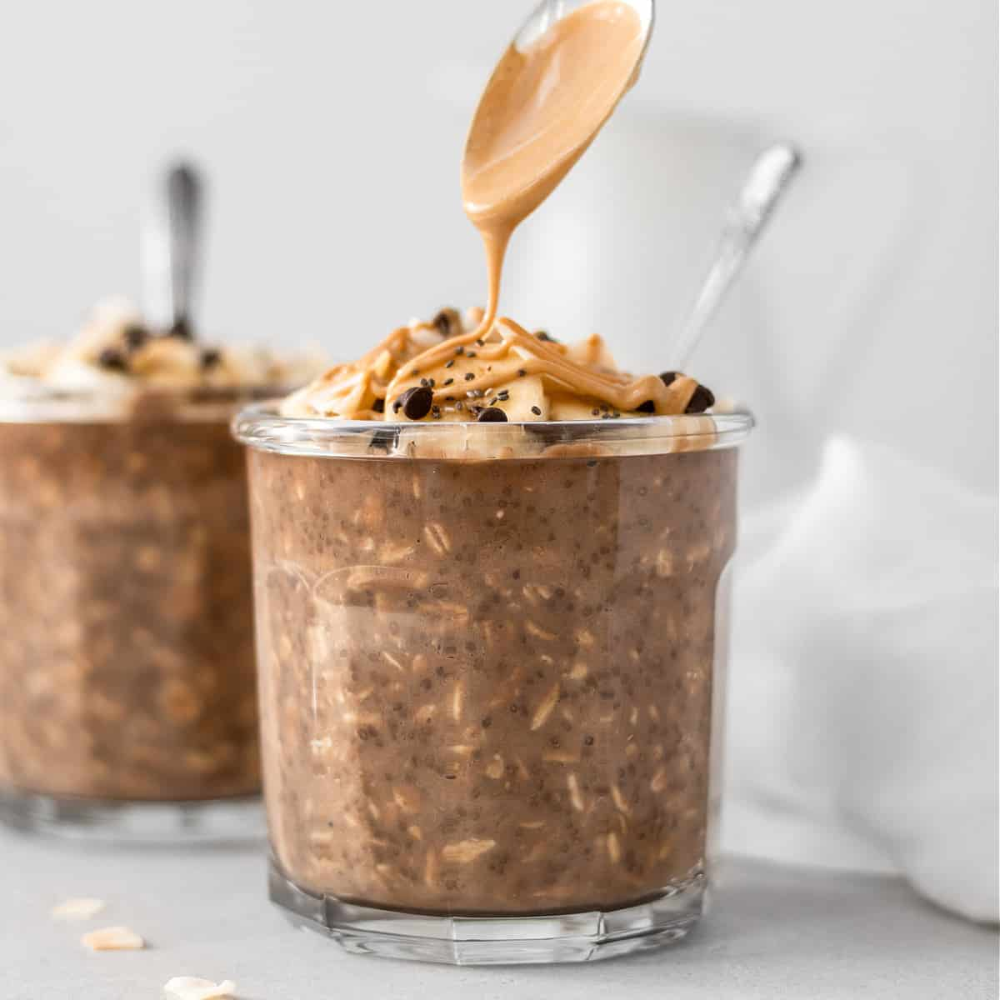

Carmela F. Madiclom IAA1
Chocolate Peanut Butter Overnight Oats

This Overnight oat meal recipe is perfect for busy people who want quick and healthy breakfast options. This receipe is packed with protein and fiber, making it a great choice for a nutritious start to your day. This is also a perfect on the go breakfast option for students
Ingredients
- 1/2 cup of rolled oats
- 1/4 cup of peanut butter
- 1 tablespoon of chia seeds
- 1/3 cup of greek yogurt
- 1 tablespoon of cocoa powder
- 1/2 cup of milk
- 1 teaspoon of vanilla extract
- 1 tablespoon of honey
- Chocolate chips (Optional)
- Almonds (Optional)
Procedures
- Pour the rolled oats into a jar or container.
- Then add the chia seeds as a new layer.
- Pour the liquids: Milk, Vanilla Extract, and Honey into the jar.
- Add a layer of greek yogurt.
- Add the peanut butter, cocoa powder, milk, vanilla extract, and honey to the jar.
- If desired, add chocolate chips and almonds to the mixture for added flavor and texture.
- Seal the jar or container tightly and refrigerate overnight (or for at least 4 hours) to allow the oats to absorb the liquid and soften.
- In the morning, give the oats a good stir before serving. You can enjoy it cold straight from the fridge or warm it up in the microwave if you prefer.
- Top with additional chocolate chips, almonds, or any other toppings of your choice before serving.
- Enjoy your delicious and nutritious Chocolate Peanut Butter Overnight Oats!
Preparation Time
- Preparation Time
- 10 minutes
- Total time
- 4-8 hours
Approximately 10 minutes
Created By: Carmela F. Madiclom